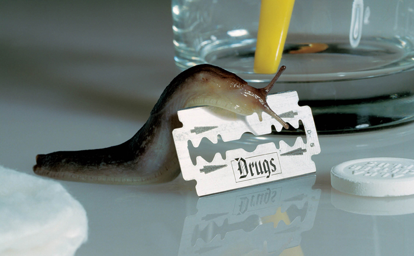
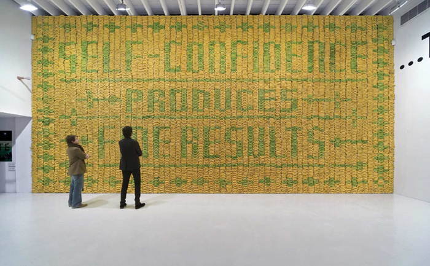
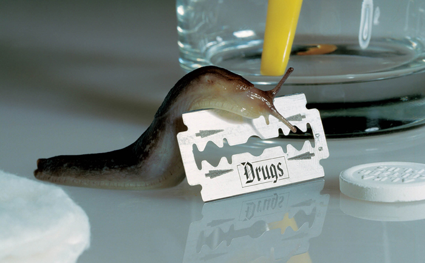
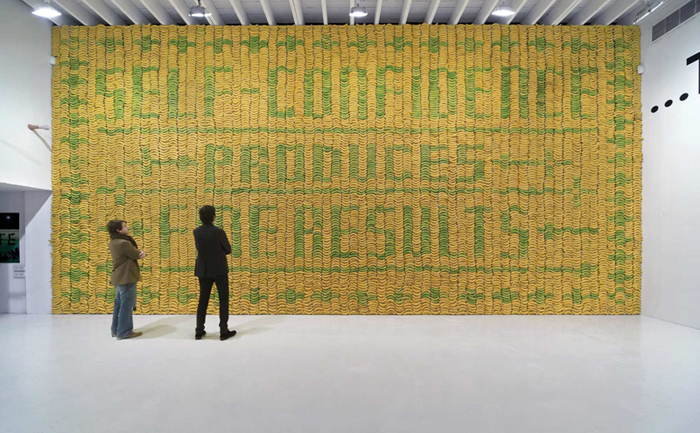

Stefan Sagmeister
Graphic Designer/Artist
Stefan Sagmeister is an outstanding, erratic and unconventional graphic designer that is mostly known for his bazar take on album cover design, poster design and artistry within the design industry.
He was born in Bregenz, Austria where he grew up with his family who owned a fashion retail store. As it was a family run business Stefan was eventually supposed to run the store along with his two older siblings but he had other things in mind. His Grandfather was a sign maker that was pretty much graphic design back in the late 19th Century, which is possibly where he got his inspiration to be so creative.
It all started in 1962 for Stefan while still living in his birth town Bregenz he worked for a local magazine called Alphorn by creating poster illustrations and layouts and this was when he produced his first wacky production of using real people to create letters then photograph it, this was to promote the Anarchy issue for the Alphorn magazine. After working at the magazine for a while Stefan realized that he actually really enjoyed what he was doing and that he would like to further on in his design adventure, so at the age of 19 he decided to move to Vienna to study at the most highly recommended University of Applied Arts to attend their Graphic Design course. Unfortunately he was rejected from the university but this didn’t stop Stefan doing what he wanted to do, he listed in a private art school for a year then got into the Graphic design course on his second attempt.
While studying at the University of Applied Arts, Vienna Stefan and three of his friends set up a group who were introduced to a family friend musician Alexander Geobel who then introduced him to the very highly respected Schauspielhaus Theatre, this is where they started making posters for the theatre that audiences could buy and hang them up on their wall as art. This lead on to getting involved with a number of projects in Vienna like saving another famous theatre that the city was going to knock down and having his own show for a day in the theatre he helped to save by creating powerful graphic poster designs that clearly effected the on lookers. This was his epiphany moment that he could do something that is “wonderful and possibly helpful”.
By doing these extra activities and through university Sagmeister landed himself a scholarship with Pratt Institute, Brooklyn, New York City in 1987. He continued his learning of graphic design and gained experience by doing, such as creating business cards for his girlfriend at the time that were printed on $1 bills, this was a mad person thing to do but it would obviously make people perk up and pay attention. After studying at Pratt Institute for 3 years he had to go back to Vienna for military service.
When moving to Hong Kong in 1991, he had always dreamed of getting a job in the first class design studio M&Co. After many, many phone calls to the M&Co office he finally got an interview with the founder Tribor Kalman who was his hero and still is his biggest inspiration throughout his whole career. He had originally wanted an interview with Tribor for an essay he was doing at Pratt at the time but was sneakily smart and brought along his portfolio to show him to put himself out there into the design industry. Stefan sent Tribor his finished essay and apparently he kept it in his office along with only 12 other books. They kept in touch and when he returned from Hong Kong four years later he got the job at M&Co that he had always dreamed of.
Tribor was a huge inspiration to Stefan because he showed him how the design industry works and what needs to be built up to make it a success. Stefan got the idea of working freely from Tribor and to have a cut off point between work and life so that graphic design didn’t destroy his soul. Tribor also had a huge influence on how Stefan later set up his own business because of the things he learnt while working at M&Co.
Sagmeister had always wanted to eventually set up his own design studio like most designers and as after working at M&Co for a couple of months Tribor decided to close down the studio and go to Rome to work, So he set up a studio called Sagmeister inc. he wanted to go in the direction of the music industry to create artwork for bands and artists that he liked which was obviously a huge success as they are still very famous today. He is very well known for his quirky album cover designs for the likes of The Rolling Stones, Lou Reed, OK Go and many others. Generally his designs are very strange in a good way, they all contain different elements that seem to be in a few of his designs such as cut outs, writing on human skin and excellent use of typography in everything he does that you can also see in his album cover artwork. Shown below are a few of his designs.
The business was kept small keeping in mind what Tribor had told him “keep the company small”, this meant there was only 2 other people working with Stefan on these projects. Even though their main focus was on the music instustry they also welcomed commissions from other clients, this included the now very famous lecture posters where one of his students had carved text into his body for AIGA, this was seen as absurd within the social standards that he loves to push.
I think that Stefan Sagmeister has a huge influence on graphic design today because he has continued to push the social acceptance of people through his designs by showing naked bodies, bold graphic illustrations and typography that are trying to provoke reactions from the audience, this is a very contemporary way of designing as it is harder to turn peoples heads and actually shock our audiences. He has done various projects that inject this theory into the design industry but also keeps it pretty as he has said in various interviews I have read, that are a highly considered element to his designs.
A projects that caught my eye when doing my research was his book What I Have Learned In My Life So Far is brilliant, I bought this book thinking it was going to tell me a bit about him using words but it was all imagery which was a great surprise. I love how he has the ability to use almost any raw materials or objects to create installations and created in and outside the studio and this book shows you exactly what he is good at… everything. I quickly realized that in my IxD course we have been learning a lot about how to create similar designs to Stefan such as the point, line, plane strategy and also the use of typography within graphic design. A lot of the little books within this book seem to have a contrast on the front and back cover of each one that makes them create tension with each other, I am not sure why this is but it makes me think and that makes me like it
The front cover of this book inspired me to create some of my own designs using a scalpel to cut out various shapes to create patterns, I loved the feeling of actually using paper and not constantly sitting at my computer which I think Stefan likes about graphic design too, its about using anything you can get your hands on to make something “pretty”.
As Stefans designs are quite controversial and is known for using methods not many other designers would even think of, people that are a fan of his work think it is both captivating and inspirational in its message and its beauty (which would be me), on the other hand people who don’t fathom his unorthodox methods of trying to push social standards think he is bizarre and don’t get it. I think this is what makes his work interesting and unusual.
I love this image from a series created by Stefan about the use of drugs in an unglamourous and kind of humourous way. This series of images were created to show that drugs / are fun / in the beginning / but / become a drag / later on. The typography on the blade fits in very well as a thug type font which are assosiated with drugs and also the snail is a good representation of what drugs can do to you because everyone knows whenever snails touch acidity they shrivel up and die sort of like humans would do.

The style of Sagmeisters work is very graphical and often uses real life objects to create statements, I also feel like his work has a lot of texture may it be from physical materials or even drawings that gives them a feeling of life. You notice this especially through his exhibition ‘Banana Wall’ at Deitch Projects, this was the use of 10,000 bananas that spelt out self-confidence. The point of this exhibition was to show people that if they loose their self-confidence it can come back just like the when the bananas changed colour and you couldn’t see the words then a week later you could see them again because they changed to a different shade. A very good simple idea on a simple outlook.

Now Stefan has a partnership with Jessica Walsh making his previous company Sagmeister inc. into Sagmeister and Walsh which is made up of themselves and 3 other designers in their New York studio. They have evolved the company into a firm that creates identities, comercials, websites, apps, films and books.
"You can have an art experience infront of a Rembrandt...or in front of a piece of graphic design" - Stefan Sagmeister.
I think that Stefan Sagmeister has a huge influence on graphic design today because he has continued to push the social acceptance of people through his designs by showing naked bodies, bold graphic illustrations and typography that are trying to provoke reactions from the audience, this is a very contemporary way of designing as it is harder to turn peoples heads and actually shock our audiences. He has done various projects that inject this theory into the design industry but also keeps it pretty as he has said in various interviews I have read, that are a highly considered element to his designs.
A projects that caught my eye when doing my research was his book What I Have Learned In My Life So Far is brilliant, I bought this book thinking it was going to tell me a bit about him using words but it was all imagery which was a great surprise. I love how he has the ability to use almost any raw materials or objects to create installations and created in and outside the studio and this book shows you exactly what he is good at… everything. I quickly realized that in my IxD course we have been learning a lot about how to create similar designs to Stefan such as the point, line, plane strategy and also the use of typography within graphic design. A lot of the little books within this book seem to have a contrast on the front and back cover of each one that makes them create tension with each other, I am not sure why this is but it makes me think and that makes me like it
The front cover of this book inspired me to create some of my own designs using a scalpel to cut out various shapes to create patterns, I loved the feeling of actually using paper and not constantly sitting at my computer which I think Stefan likes about graphic design too, its about using anything you can get your hands on to make something “pretty”.
As Stefans designs are quite controversial and is known for using methods not many other designers would even think of, people that are a fan of his work think it is both captivating and inspirational in its message and its beauty (which would be me), on the other hand people who don’t fathom his unorthodox methods of trying to push social standards think he is bizarre and don’t get it. I think this is what makes his work interesting and unusual.
I love this image from a series created by Stefan about the use of drugs in an unglamourous and kind of humourous way. This series of images were created to show that drugs / are fun / in the beginning / but / become a drag / later on. The typography on the blade fits in very well as a thug type font which are assosiated with drugs and also the snail is a good representation of what drugs can do to you because everyone knows whenever snails touch acidity they shrivel up and die sort of like humans would do.
The style of Sagmeisters work is very graphical and often uses real life objects to create statements, I also feel like his work has a lot of texture may it be from physical materials or even drawings that gives them a feeling of life. You notice this especially through his exhibition ‘Banana Wall’ at Deitch Projects, this was the use of 10,000 bananas that spelt out self-confidence. The point of this exhibition was to show people that if they loose their self-confidence it can come back just like the when the bananas changed colour and you couldn’t see the words then a week later you could see them again because they changed to a different shade. A very good simple idea on a simple outlook.
Now Stefan has a partnership with Jessica Walsh making his previous company Sagmeister inc. into Sagmeister and Walsh which is made up of themselves and 3 other designers in their New York studio. They have evolved the company into a firm that creates identities, comercials, websites, apps, films and books.
"You can have an art experience infront of a Rembrandt...or in front of a piece of graphic design" - Stefan Sagmeister.